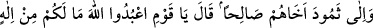
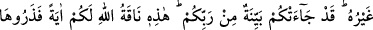
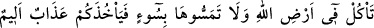
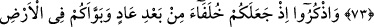
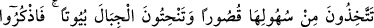
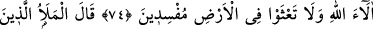
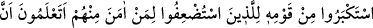
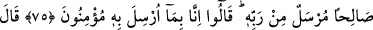
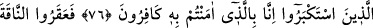
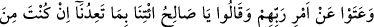
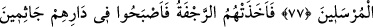
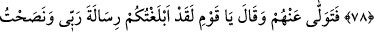
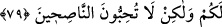
SÂLİH ALEYHİSSELÂM
VE SEMÛD KAVMİ
73. Semûd kavmine de kardeşleri Salih’i (gönderdik). Dedi ki: Ey kavmim!
Allah’a kulluk edin; sizin O’ndan başka tanrınız yoktur. Size Rabbinizden açık bir
delil gelmiştir. O da, size bir mucize olarak Allah’ın şu devesidir. Onu bırakın,
Allah’ın arzında yesin, (içsin); ona kötülük etmeyin; sonra sizi elem verici bir azap
yakalar.
74. Düşünün ki, (Allah) Âd kavminden sonra yerlerine sizi getirdi. Ve
yeryüzünde sizi yerleştirdi: Onun düzlüklerinde saraylar yapıyorsunuz, dağlarında
evler yontuyorsunuz. Artık Allah’ın nimetlerini hatırlayın da yeryüzünde fesatçılar
olarak karışıklık çıkarmayın.
75. Kavminin ileri gelenlerinden büyüklük taslayanlar, içlerinden zayıf görülen
inananlara dediler ki: Siz Salih’in, Rabbi tarafından gönderildiğini biliyor musunuz?
Onlar da Şüphesiz biz onunla ne gönderilmişse ona inananlarız, dediler.
76. Büyüklük taslayanlar dediler ki: “Biz de sizin inandığınızı inkâr edenleriz.”
77. Derken o dişi deveyi ayaklarını keserek öldürdüler ve Rablerinin emrinden
dışarı çıktılar da: Ey Salih! Eğer sen gerçekten peygamberlerden isen bizi tehdit